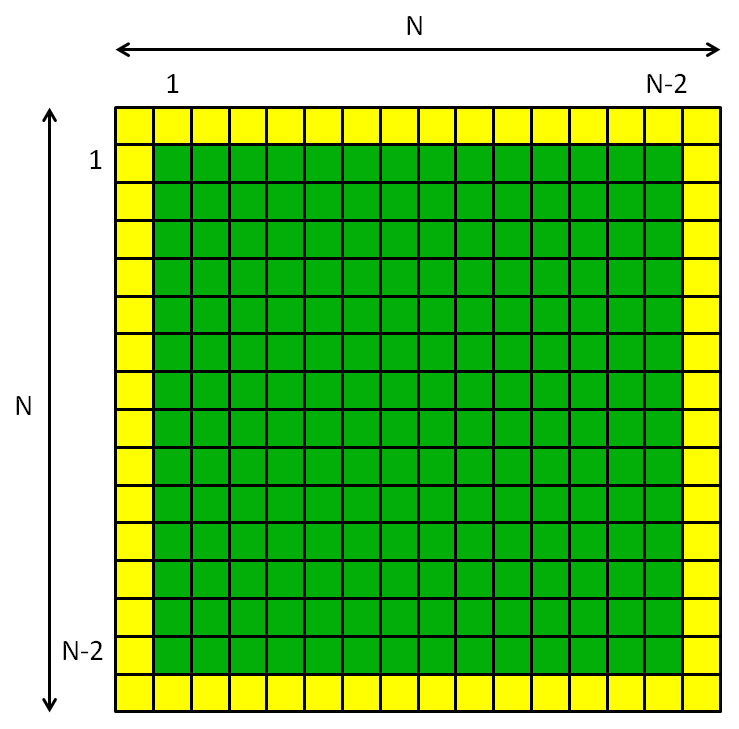
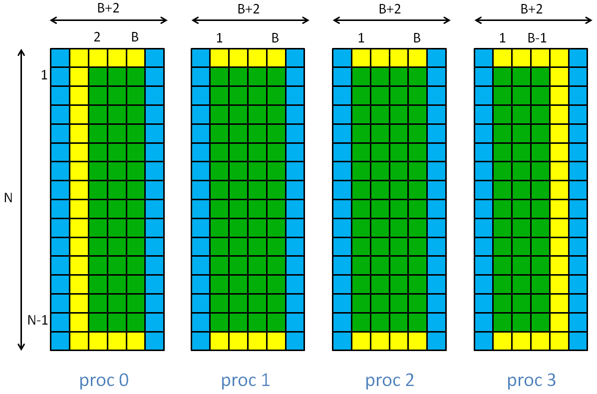

The main goal of last week's lab was to get MPJ programs running at all in our cluster environment. This week, assuming you succeeded in that, I want you to concentrate on one particular - more complex - distributed-memory parallel program.
Up till now in these labs, parallel speedup should, on the whole, have come relatively easily. The program you will study this week involves a considerable amount of inter-process communication, and speedup is a harder proposition. You should hopefully see speedup if you run your program in the MPJ Express "multicore mode". I also hope you will be able to demonstrate some speedup in "cluster mode". Ultimately, though, our problems remains small - parallel computing works best for really large problems.
First, please read through the week 5 lecture about data decomposition and MPI communication. That lecture describes how to make an MPI parallel version of Conway's Game of Life. In this lab I will ask you to experiment instead with an MPJ parallel version of our Laplace Equation solver. But it follows a very similar coding pattern.
A Distributed Memory Solver
We follow the prescription given in the lecture for Life very closely, adding ghost regions and edge swap communications. In detail, the Laplace equation is slightly more complicated because we have to worry about how the fixed boundary conditions at the edges of the system interact with the ghost regions.
In the sequential algorithm the array was organized like this:

The yellow border represents array elements where the field phi is set to fixed boundary values. The central green area represents array elements that will be updated in the algorithm. The numbers at the side of the grid represent the ranges of the indexes used in the update loops.
When we decompose this in the i dimension, and add ghost regions at the edges of the blocks, we get something like this:

Here the blue areas are the ghost regions. B is the unextended block size, N/P. With ghost regions added, the local arrays are all (B+2) × N. The range of indexes in these arrays that appear in the update loops is also shown. Generally i loops start at 1 and ends at B, avoiding the ghost regions. But because of the fixed boundary conditions, this range has to be further restricted for process 0 and process P-1.
Putting together the various ingredients above gives us the following fairly long, MPJ-based, distributed memory, version of the Laplace Equation:
import mpi.* ;
import java.awt.* ;
import javax.swing.* ;
public class MPJLaplace {
final static int N = 256 ;
final static int CELL_SIZE = 2 ;
final static int NITER = 100000 ;
final static int OUTPUT_FREQ = 1 ;
static int P, me, B ;
static float [][] phi ;
static float [][] newPhi ;
static float [][] allPhi ; // temporary array for display
static Display display ;
public static void main(String args []) throws Exception {
MPI.Init(args) ;
me = MPI.COMM_WORLD.Rank() ;
P = MPI.COMM_WORLD.Size() ;
if(me == 0) {
allPhi = new float [N] [N] ; // used for display only
display = new Display() ;
}
B = N / P ;
phi = new float [B+2][N] ;
newPhi = new float [B+2][N] ;
// Make voltage non-zero on left and right edges
if(me == 0) {
for(int j = 0 ; j < N ; j++) {
phi [1] [j] = 1.0F ;
}
}
if(me == P-1) {
for(int j = 0 ; j < N ; j++) {
phi [B] [j] = 1.0F ;
}
}
displayPhi() ;
// Don't change ghost regions in update loops
int begin = 1 ;
int end = B + 1 ;
// Don't update fixed boundary values
if(me == 0) {
begin = 2 ;
}
if (me == P-1) {
end = B ;
}
// Main update loop.
long startTime = System.currentTimeMillis();
for(int iter = 0 ; iter < NITER ; iter++) {
// Edge swap
int next = (me + 1) % P ;
int prev = (me - 1 + P) % P ;
MPI.COMM_WORLD.Sendrecv(phi [B], 0, N, MPI.FLOAT, next, 0,
phi [0], 0, N, MPI.FLOAT, prev, 0) ;
MPI.COMM_WORLD.Sendrecv(phi [1], 0, N, MPI.FLOAT, prev, 0,
phi [B+1], 0, N, MPI.FLOAT, next, 0) ;
// Calculate new phi
for(int i = begin ; i < end ; i++) {
for(int j = 1 ; j < N - 1 ; j++) {
newPhi [i] [j] =
0.25F * (phi [i] [j - 1] + phi [i] [j + 1] +
phi [i - 1] [j] + phi [i + 1] [j]) ;
}
}
// Update all phi values
for(int i = begin ; i < end ; i++) {
for(int j = 1 ; j < N - 1 ; j++) {
phi [i] [j] = newPhi [i] [j] ;
}
}
if(iter % OUTPUT_FREQ == 0) {
if(me == 0) {
System.out.println("iter = " + iter) ;
}
displayPhi() ;
}
}
long endTime = System.currentTimeMillis();
if(me == 0) {
System.out.println("Calculation completed in " +
(endTime - startTime) + " milliseconds");
}
displayPhi() ;
MPI.Finalize() ;
}
public static void displayPhi() {
if(me > 0) {
MPI.COMM_WORLD.Send(phi, 1, B, MPI.OBJECT, 0, 0) ;
}
else { // me == 0
for(int i = 1 ; i <= B ; i++) {
for(int j = 0 ; j < N ; j++) {
allPhi [i - 1] [j] = phi [i] [j] ;
}
}
for(int src = 1 ; src < P ; src++) {
MPI.COMM_WORLD.Recv(allPhi, src * B, B, MPI.OBJECT, src, 0) ;
}
display.repaint() ;
}
}
static class Display extends JPanel {
final static int WINDOW_SIZE = N * CELL_SIZE ;
Display() {
setPreferredSize(new Dimension(WINDOW_SIZE, WINDOW_SIZE)) ;
JFrame frame = new JFrame("Laplace");
frame.setDefaultCloseOperation(JFrame.EXIT_ON_CLOSE);
frame.setContentPane(this);
frame.pack();
frame.setVisible(true);
}
public void paintComponent(Graphics g) {
for(int i = 0 ; i < N ; i++) {
for(int j = 0 ; j < N ; j++) {
float f = allPhi [i] [j] ;
Color c = new Color(f, 0.0F, 1.0F - f) ;
g.setColor(c) ;
g.fillRect(CELL_SIZE * i, CELL_SIZE * j,
CELL_SIZE, CELL_SIZE) ;
}
}
}
}
}
The parts of the code primarily related to dealing with edges (including
edge swap) are highlighted in red. These are the parts you should
particularly try to understand.
A few comments on this code:
- You may notice that the ghost regions at the extreme edges (left of process zero and right of process P-1) are redundant. The values they contain are never used. They are included for uniformity, to make the code a little simpler. With some extra work redundant communications can be avoided - see below.
- I have put ghost regions on the newPhi array as well as the phi array. These aren't really needed and they are slightly wasteful of memory. But they make subscripting of the arrays a little more uniform.
- The array allPhi has a role identical to the array allSet in the discussion of the distributed Mandelbrot Set also in the week 17 lecture. In the method displayPhi() it is used to gather the data from the distributed blocks (excluding ghost regions), ready for display by process zero.
Experiments and Questions
Last week, to connect to the cluster, I suggested you use PuTTY. PuTTY remains a good lightweight solution if you just need a remote terminal. But this week's main example generates graphical output, so you also need an X Server running on your local machine.
Windows users
I experimented with few of open source standalone X servers for Windows, but so far the most robust (free) solution I have found is MobaXterm from Mobatek. It isn't open source, but there is a free home edition available. It integrates a remote terminal with a built in X server for graphics, and also has a slightly more modern and user-friendly interface than PuTTY.
If you are working on a Windows home computer, I suggest you download and install the home edition of MobaXterm.
In the "Session" tab of MobaXterm, select "SSH" and set "Remote host" to mn01.soc.uni.ds.port.ac.uk - for me that was as much as I needed to do to give a terminal to the Hadoop head node, with graphics transparently tunnelled to my laptop and displayed.
Mac or Linux users
If your home computer is a Mac, you may need to first install the XQuartz X11 server, if it isn't already on your system.
From a Mac or Linux, you should be able to ssh to the cluster by opening a terminal and running a command similar to:
$ ssh -Y dbc@mn01.soc.uni.ds.port.ac.ukwhere dbc is my account ID on the cluster.
(In some cases it may be necessary to issue a command similar to:
$ export DISPLAY=localhost:0.0before using ssh -Y. On some systems, ssh -X may work instead. You may need to do some experimentation.
A good test of whether X11 forwarding is working correctly from the cluster is to issue a command like:
$ xclockon mn01.soc. If this does not create a clock window on your home computer, check the local value of the DISPLAY environment variable on mn01.soc by:
$ echo $DISPLAYIf this variable is empty, experiment with different ways of running ssh from your home computer, as described above.)
Running the code
Now, following instructions from last week, compile and run the MPJLaplace code given above. To compile on mn01.soc:
$ javac MPJLaplace.javaTo run in multicore mode, e.g.:
$ mpjrun.sh -np 2 MPJLaplace
Run MPJLaplace in multicore mode with P equal to 1, 2, 4, etc. Before recording timings, make sure you increase OUTPUT_FREQ to, say, 1000, so that output overheads don't dominate the results.
Compare the results with those obtained using the sequential version of Laplace given in week 4. If you also developed a shared memory parallel version of the Laplace solver that week, compare your results for MPJLaplace in multicore mode with the ones you obtained previously.
Running across multiple nodes
A pre-requisite is that mpjdaemon is running on two or more nodes in the cluster, and that you have set up your machines file to refer to these daemons, as described last week. For this week some extra considerations apply if you want to be able to see the graphics output of the program while running in cluster mode.
In general you can share use of MPJ Daemons started by other users. By default there can only be one daemon running on each node. So, especially during timetabled practial sessions, some sharing of daemons may be a necessity, because there are a limited number of nodes available.
But, to be able to get graphics back from the first process of your MPJ program (me == 0), the first daemon node named in your machines file should have been started by you personally, with X forwarding to your home computer enabled. To start that daemon you should remote to mn01.soc as described above, then from there use ssh -Y to remote to the node where you want to run your own daemon, e.g.:
$ ssh -Y wn04.soc(specifiying a chosen, free node). In this example I would then make sure wn04.soc was the first host appearing in my machines file.
Now, try to run MPJLaplace across two daemons like this:
$ mpjrun.sh -np 2 -dev niodev -headnodeip mn01.soc MPJLaplaceAgain, we assume you increased OUTPUT_FREQ to, say, 1000, so that output overheads don't dominate the results.
I have to report that, as things stand, running on two nodes in cluster mode didn't produce a parallel speedup for me. Don't be immediately discouraged!
Estimate the number of communications in the program - these should be the main overheads inhibiting speed gain.
Try to measure the cost of communication by temporarily commenting out the section of code called "Edge swap" and see what happens to timings. When you are done with this, reinstate the edge swap code.
As mentioned above, the ghost regions at left of process zero and right of process P-1 are redundant. To avoid the overhead of updating them replace the edge swap code with:
int next = me + 1 ;
int prev = me - 1 ;
if(prev >= 0 && next < P) {
MPI.COMM_WORLD.Sendrecv(phi [B], 0, N, MPI.FLOAT, next, 0,
phi [0], 0, N, MPI.FLOAT, prev, 0) ;
MPI.COMM_WORLD.Sendrecv(phi [1], 0, N, MPI.FLOAT, prev, 0,
phi [B+1], 0, N, MPI.FLOAT, next, 0) ;
}
else if(prev >= 0) { // next == P
MPI.COMM_WORLD.Recv(phi [0], 0, N, MPI.FLOAT, prev, 0) ;
MPI.COMM_WORLD.Send(phi [1], 0, N, MPI.FLOAT, prev, 0) ;
}
else if(next < P) { // prev == -1
MPI.COMM_WORLD.Send(phi [B], 0, N, MPI.FLOAT, next, 0) ;
MPI.COMM_WORLD.Recv(phi [B+1], 0, N, MPI.FLOAT, next, 0) ;
}
Does it make any difference (in theory it should halve the total amount
of communication for P = 2 in particular)?
Try running MPJLaplace in cluster mode with 4, 8, etc processes. If this produces parallel speedup, can you explain why?
Now increase the problem size. Change N to 512 and repeat your timings. To save excessive waiting you will probably want to reduce NITER to say 10000.
Change N to 1024 (possibly reduce CELL_SIZE to 1 so that the graphics window fits on your screen, and reduce NITER again if you like) and repeat the timings. By now you should be seeing at least modest parallel speedups in cluster mode.
Why does increasing the size of a problem generally make it more amenable to parallel computation?
After the lecture on collective communications, try to recode the method displayPhi() using the Gather() collective operation (see for example slide 22).